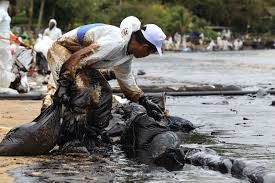
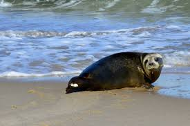

Les êtres vivants dans l'océan sont toujours de la nourriture pour autre chose. Tout changement des conditions de l'environnement peut avoir des effets drastiques sur l'ensemble de l'écosystème. Les chaînes et les réseaux alimentaires sont imprévisibles, nous ne pouvons donc pas faire grand-chose pour empêcher les dommages causés par nos actions, si ce n'est d'arrêter les actions. L'un des écosystèmes marins les plus importants est le récif de corail. Le récif de corail abrite le plus grand éventail d'espèces et se construit sur lui-même pendant des générations, grandissant et se diversifiant. Ils abritent diverses éponges, huîtres, palourdes, crabes, étoiles de mer, oursins et de nombreuses espèces de poissons. 25% de toute la vie marine dépend des récifs coralliens, soit plus de 4000 espèces de poissons différentes!
Dans une étude conduite par “Health Canada” il été trouvé que Mercury (un chemical mortel) est un risque pour les poissons prédateurs dans 82% des lacs étudiés!
Les effets des eaux usées, la pollution agricole, la pollution pétrolière, et les substances radioactives et chimiques dans les rivières sont les causes premières de l’acidification de l’eau. Cette acidification de l’eau disruptera l' écosystème. Les humains se comptent sur les récifs coralliens pour les pêcheries commerciales et récréationnelles, et les industries comme le tourisme. Chaque année, 400 millions de dollars de poissons sont pêchés hors de la mer. L’impact des activités humaines sur la vie marine a été en grande partie la pêche, mais maintenant pratiquement tout près de l’eau que les humains font a un effet négatif sur toute vie marine.
La construction de villes côtières comme dans la construction de quais et de ports est extrêmement dommageable pour les écosystèmes marins. Les déchets du processus de construction sont habituellement déversés directement dans la source d’eau voisine. Les entreprises industrielles utilisent l’eau pour refroidir leur équipement et perturber le fond marin pour extraire du métal précieux. Les touristes jonchent et donnent également les plastiques de poisson restants et polluent l’environnement. Cela peut entraîner des pénuries de poisson et des prix plus élevés du poisson. Les déversements d’hydrocarbures et les pesticides se lavent de la pluie dans l’eau et tuent et causent des anomalies congénitales chez les poissons. Les poissons exotiques d’autres régions peuvent tuer les poissons et leurs sources de nourriture.
En conclusion, les humains ont un effet très grand sur la santé des créatures marines et la seule sollution pour arrêter cet effet est de arreter nos actions qui polluent l'eau, comme la construction de villes côtières, l'extraction du pétrole, l'utilisation de chemicaux et les métaux toxiques.